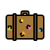

Pohádková knihovna
Co bylo v příběhu?
Poslechněte si povídku a hádejte, co v ní bylo.

Čí je to kufr?
Podle věcí v kufru poznejte pohádkovou postavu.
Popletená pohádka
Najděte v obrázku věci, které do pohádky nepatří.
Jak to bylo dál?
Seřaďte okénka tak, jak šla v pohádce za sebou.